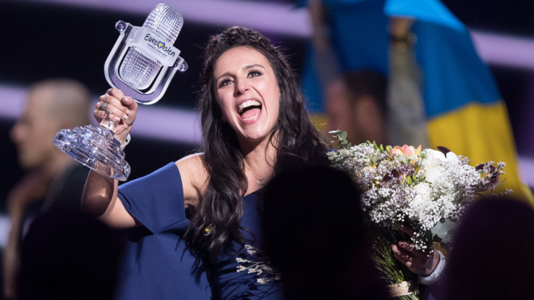
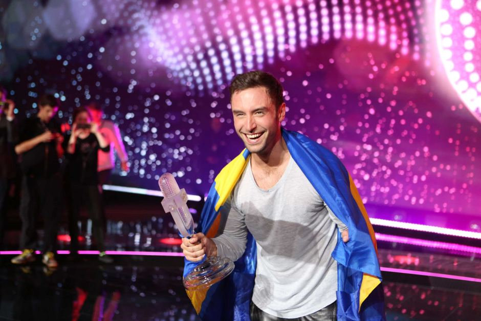

2016 | จามาล่า – 1944 (ยูเครน)
จามาล่า นักร้องหญิงชาวยูเครนเชื้อสายตาตาร์ไครเมีย ชนพื้นเมืองดั้งเดิมของคาบสมุทรไครเมีย ชนะการแข่งขัน ณ กรุงสตอกโฮล์ม ด้วยบทเพลง 1944 ที่เธอแต่งเองทั้งเนื้อร้องและทำนอง ซึ่งเธอแต่งเกี่ยวกับเหตุการณ์เนรเทศชาวตาตาร์ออกจากไครเมีย ในปีคริสตศักราชที่ 1944 และแทนที่ด้วยชาวรัสเซีย จนเป็นสาเหตุของข้อพิพาทวิกฤตไครเมียจนถึงทุกวันนี้

2015 | โมนส์ เซลเมลโลฟ – HEROES (สวีเดน)
โมนส์ เซลเมลโลฟ นักร้องหนุ่มสวีดิช คว้าชัยชนะ ณ กรุงเวียนนา ด้วยบทเพลง “HEROES” ที่กล่าวถึงความเป็นวีรบุรุษ เป็นได้ด้วยตัวคุณ ไม่จำเป็นต้องแสดงออกให้ผู้อื่นรู้แต่อย่างใด โดยในโชว์ของเขานั่นได้นำ คอมพิวเตอร์กราฟฟิคมาประกอบการแสดงจำนวนมาก

2014 | คอนชิต้า วูร์สต์ – RISE LIKE A PHOENIX (ออสเตรีย)